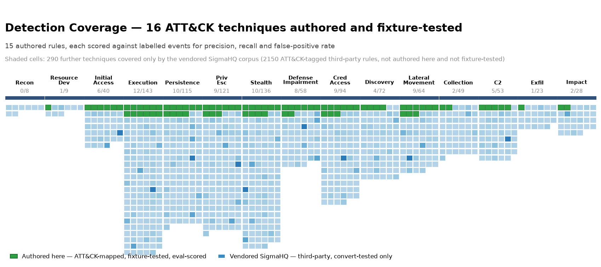

Authored detections
My own rules. Read FP rate first: precision moves with
the malicious-to-benign ratio in each case set, which is authored rather than
observed, while FP rate and recall do not. The 2,399 vendored SigmaHQ
rules are not listed here; they only feed the coverage map above.